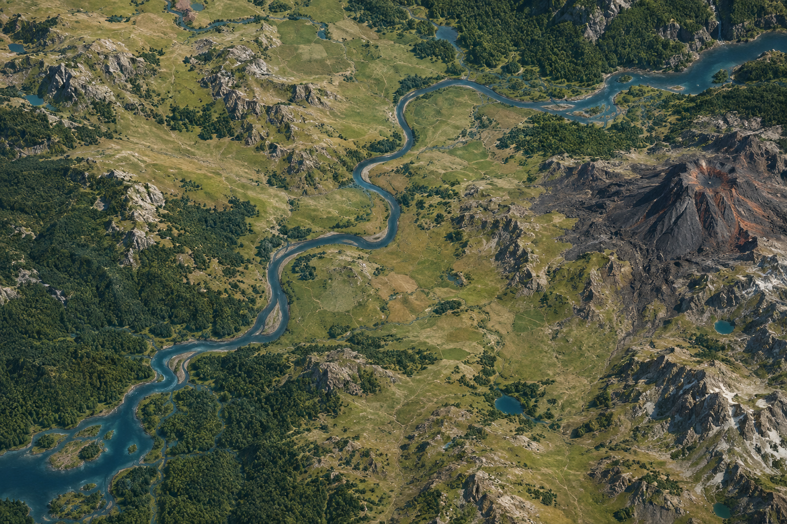

Map
A visual representation of where features are located and how they relate.
ENGINEERING ESSENTIALS • UNIT 1.4
A fictional GIS investigation of basemaps, layers, legends, evidence, and decision making.
The places, people, and hazards in this game are fictional. The GIS thinking is real: distinguish a map from a GIS, select an appropriate basemap, read a legend, navigate the view, and use mapped evidence carefully.
Goal: explain when aerial, road-network, and topographic basemaps are useful for a relief decision. Complete Missions 1–15 in order. For each mission, first read the task. Next, make every requested map change in the order listed: select the named basemap, turn on each named layer, zoom or drag when asked, and click the named feature. Then choose one answer and select Check mission. If the answer is incorrect, reread the task and use the visible map and legend as evidence before trying again. A rune appears only after both the map action and answer are correct.
Enter your full name and period to unlock the map and missions.
Each mission is worth 1 point. The first wrong answer loses 0.5 point; a second wrong answer loses the remaining 0.5 point. Keep trying until you answer correctly, even if the mission is worth 0 points.
Land shape and elevation context; click a visible feature to inspect it.

Map reading: use the legend to interpret what is visible. Scroll over the map or use + and − to zoom. When zoomed in, drag the map to pan. A map feature can show where something is; it cannot by itself prove a place is currently safe, available, or large enough.
A visual representation of where features are located and how they relate.
A system that connects information to places so users can compare evidence.
The key that explains the symbols, colors, and lines on a map.
Location-based information used to support a decision—not a guess or preference.